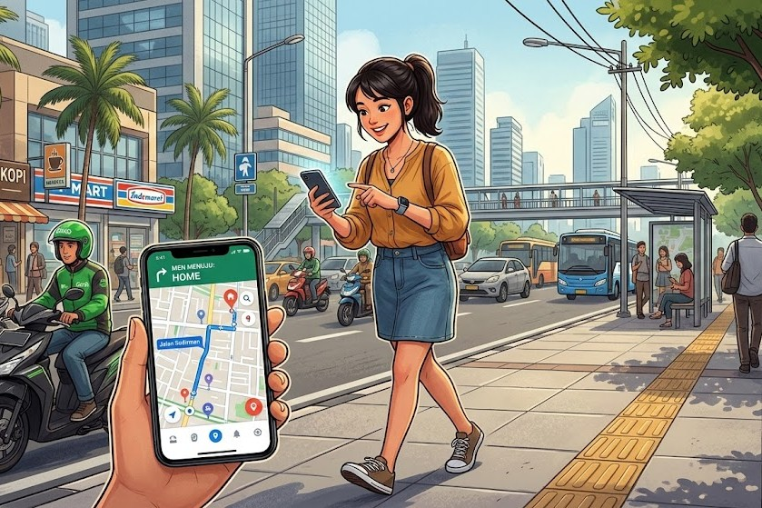

Pernahkah kamu memesan makanan lewat aplikasi dan terus memandangi ikon motor kecil di layar HP yang bergerak perlahan menuju rumahmu? Atau mungkin, kamu sering mencari rute "jalan tikus" untuk menghindari kemacetan lewat Google Maps?
Jika jawabannya ya, selamat! Kamu sebenarnya sudah bersentuhan langsung dengan teknologi canggih yang bernama GIS.

Meskipun terdengar seperti istilah teknis yang rumit, GIS sebenarnya sangat dekat dengan kehidupan kita sehari-hari. Mari kita kupas tuntas apa itu GIS dengan bahasa yang sederhana.
Jadi, Apa Sih Sebenarnya GIS Itu?
GIS adalah singkatan dari Geographic Information System (Sistem Informasi Geografis).
Kalau peta kertas tradisional hanya menunjukkan letak suatu tempat ("Di mana letak kota A?"), GIS adalah peta digital cerdas yang punya "otak". GIS tidak hanya menunjukkan di mana lokasinya, tetapi juga memberi tahu kita apa yang terjadi di lokasi tersebut dan mengapa.
Sederhananya: GIS adalah teknologi yang menggabungkan peta digital dengan data.
Analogi "Kue Lapis": Cara Kerja GIS
Untuk memahami cara kerja GIS, bayangkan sebuah kue lapis.

Saat kamu melihat peta di GIS, kamu tidak hanya melihat satu gambar datar. Kamu sedang melihat tumpukan lapisan data transparan (layer) yang disatukan. Misalnya, untuk membuat peta sebuah kota, GIS menggunakan beberapa lapisan ini:
- Lapisan 1 (Paling Bawah): Peta dasar, seperti citra satelit atau bentuk permukaan bumi.
- Lapisan 2: Jaringan jalan raya, jalan tol, dan gang kecil.
- Lapisan 3: Letak bangunan, perumahan, dan fasilitas umum.
- Lapisan 4: Area hijau, hutan, sungai, dan daerah resapan air.
Ketika semua lapisan ini ditumpuk menjadi satu, kita bisa melihat "gambaran besar" yang luar biasa. Kita bisa tahu persis di mana daerah yang rawan banjir (karena sungainya dekat dengan perumahan padat) atau di mana lokasi yang paling pas untuk membangun fasilitas baru.
Kenapa GIS Itu Penting Banget?
Teknologi ini bukan cuma mainan para ilmuwan atau pembuat peta. GIS digunakan oleh hampir semua sektor di dunia modern:
- Penyelamat di Kala Bencana: Saat terjadi gempa atau banjir, tim SAR menggunakan GIS untuk memetakan daerah mana yang paling parah terdampak dan jalur evakuasi mana yang paling aman untuk dilalui.
- Pertanian dan Lingkungan: GIS membantu memetakan kesehatan tanah dan pola aliran sungai. Petani jadi tahu lahan mana yang paling subur atau area mana yang butuh konservasi air.
- Bisnis dan Ekonomi: Bayangkan kamu ingin membuka kedai kopi baru. Dengan GIS, kamu bisa menganalisis di mana pusat keramaian, di mana kompetitor berada, dan dari mana asal pelanggan terbanyakmu.
- Keseharian Kita: Tentu saja, aplikasi ojek online, layanan kurir paket, hingga game seperti Pokémon GO sangat bergantung pada GIS agar bisa berfungsi.

Kesimpulan
Singkatnya, GIS adalah alat bercerita yang luar biasa. Ia mengubah tumpukan data angka dan tabel yang membosankan menjadi sebuah cerita visual berupa peta yang mudah dipahami siapa saja. Di era digital saat ini, pemahaman dasar tentang ruang dan lokasi bukan lagi sekadar pelengkap, melainkan sebuah kebutuhan.